Type a logline. The Minecraft world spawns in your browser. Drag to look. Hit Record to keep it.
↑ 40-sample showreel (~10min, audit 100% pass, all real MC server-side recording)
One Chinese sentence → GPT-5.5 → JSON build_cmds → deterministic simulate → top-down PNG.
Verified by Paper RCON execute if block: 98% command-success, 83% white-box probe hit, 100% key-object hit across 13 ad-hoc themes.
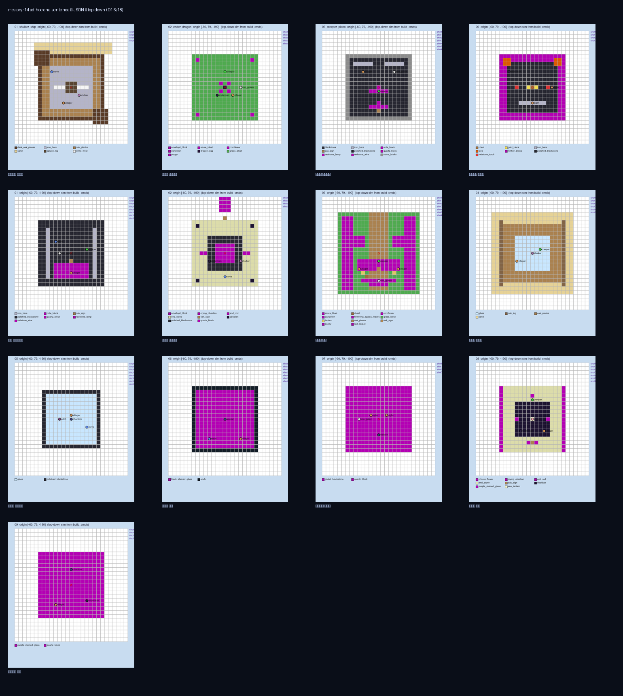
↑ 13 themes mosaic (each generated by typing one Chinese sentence into cli_gate1.py)
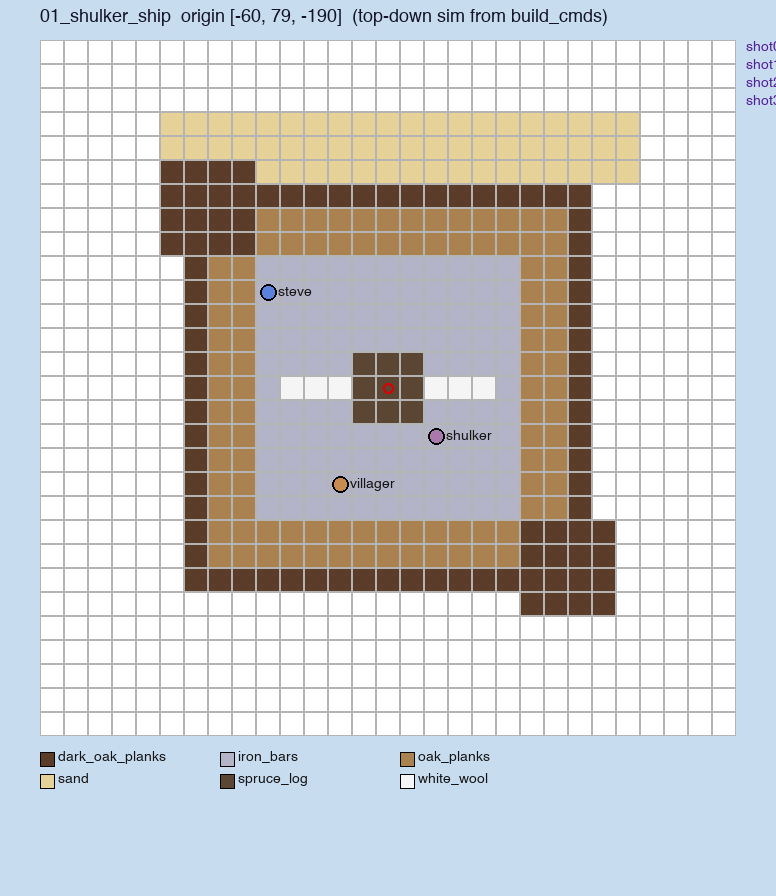
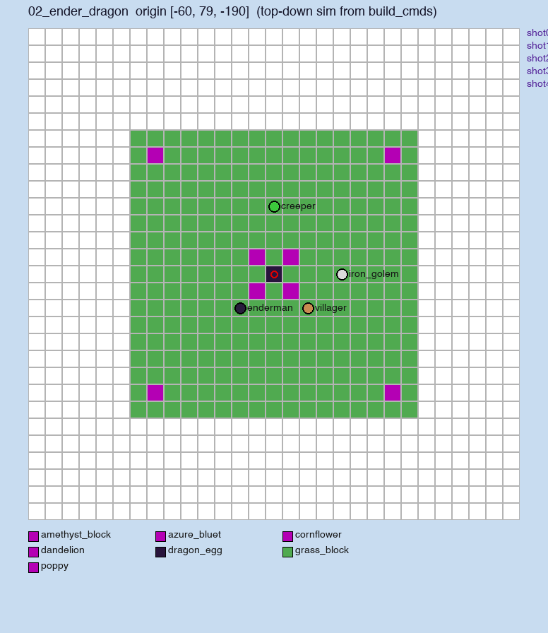
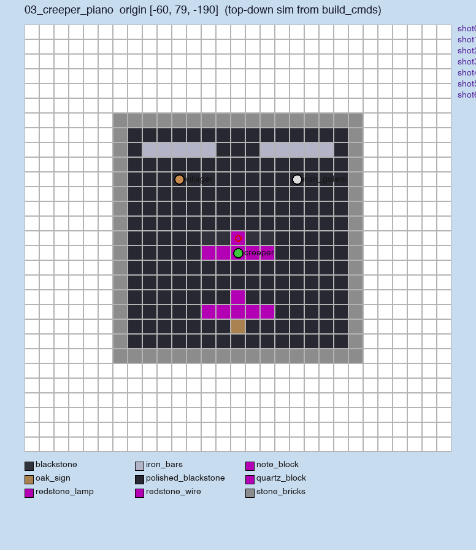
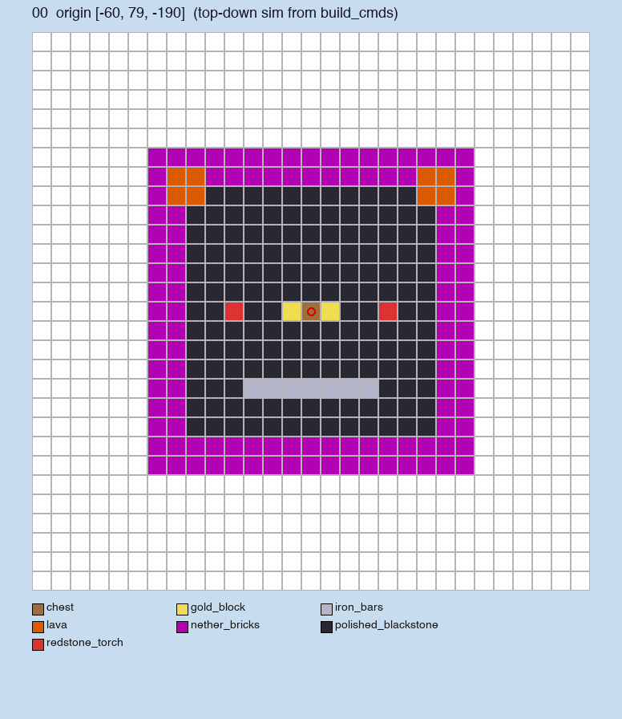
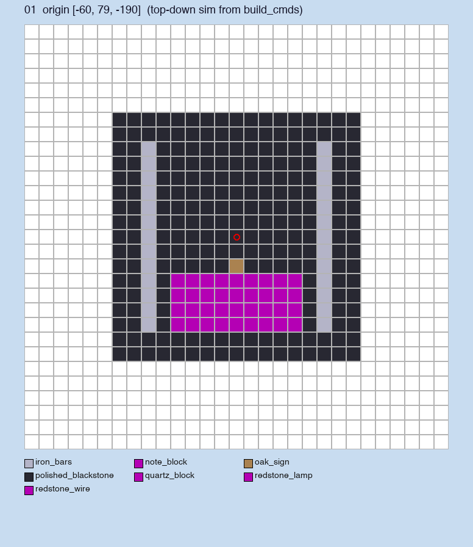
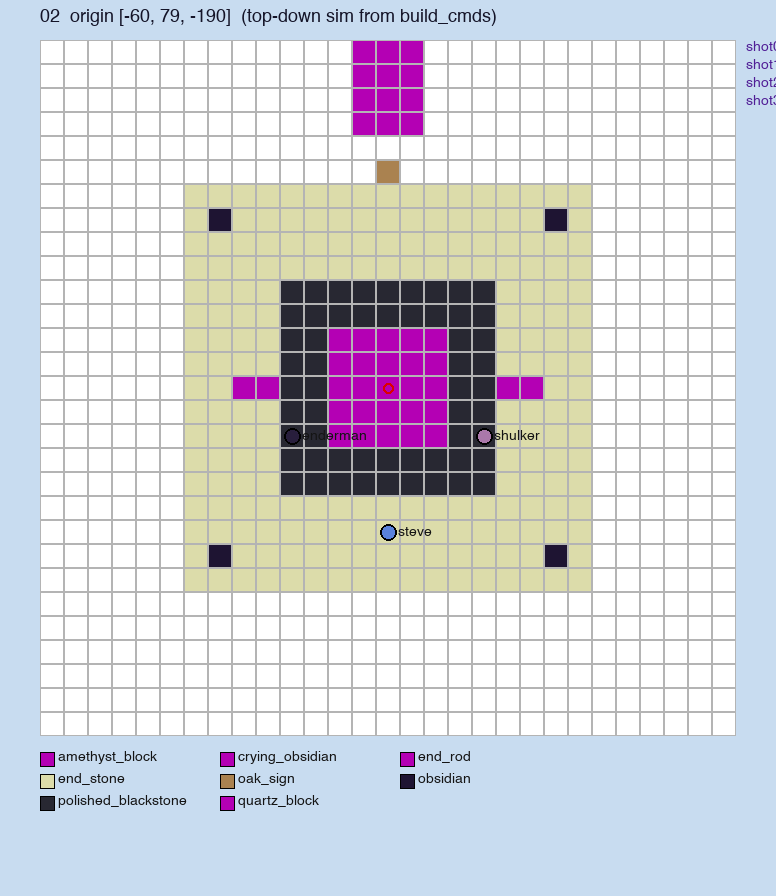
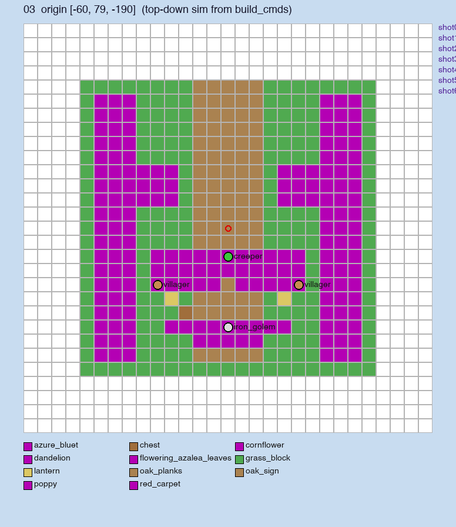
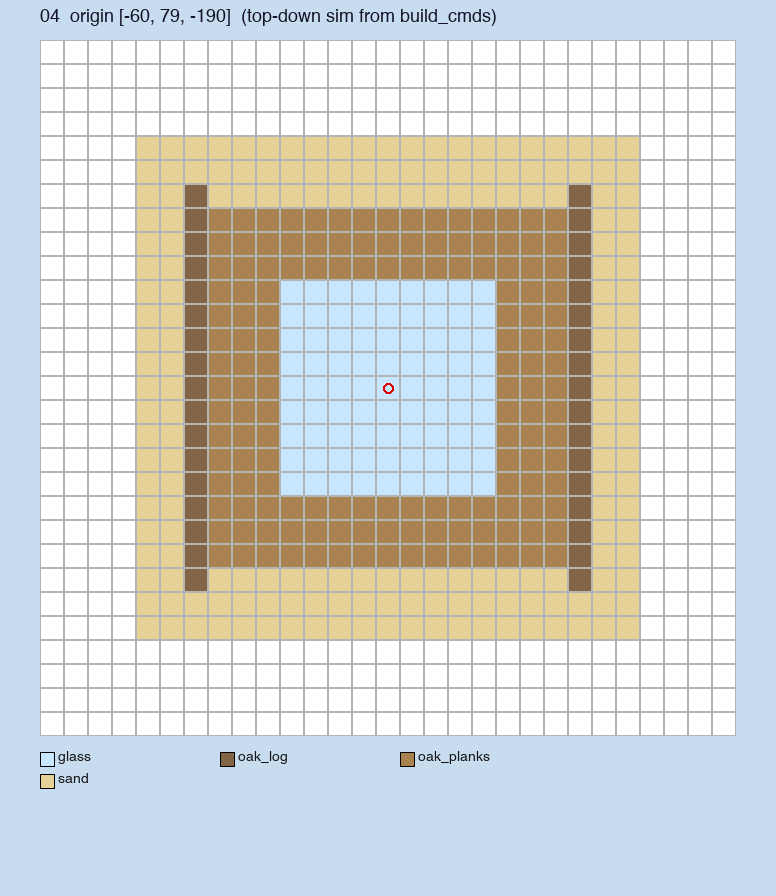
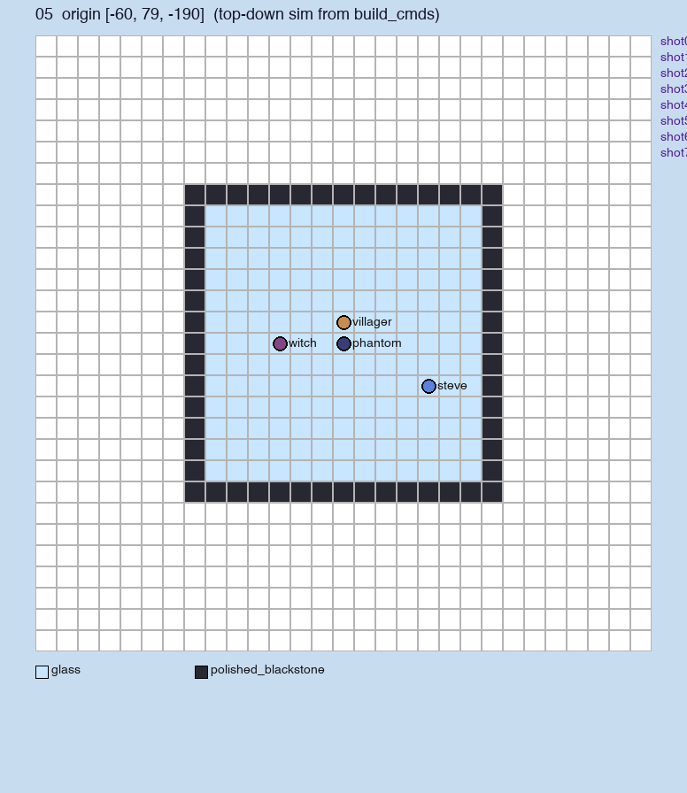
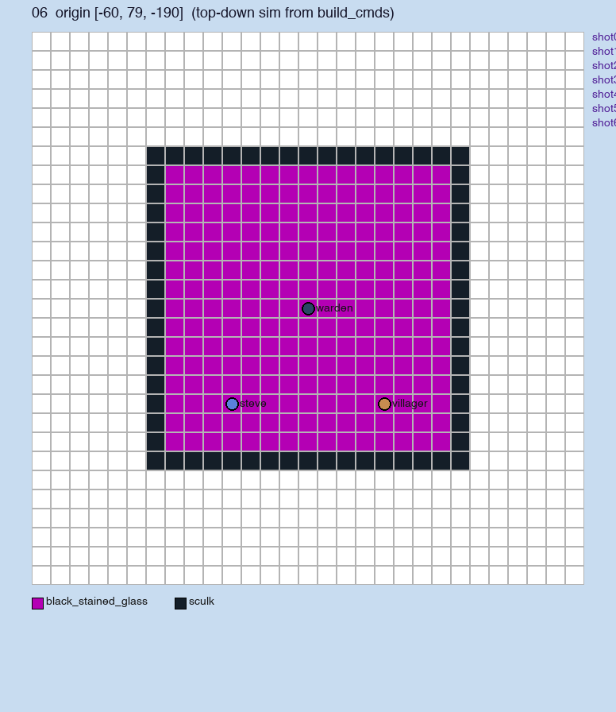
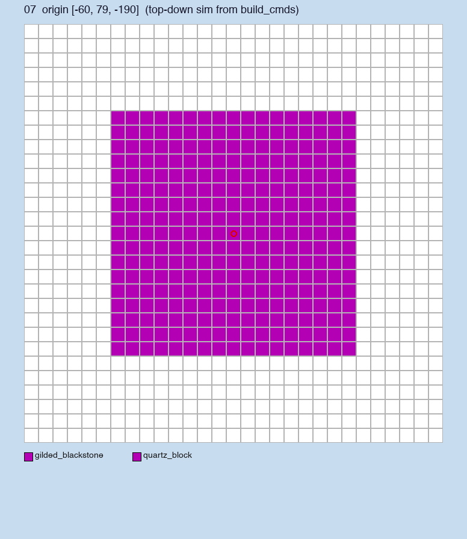
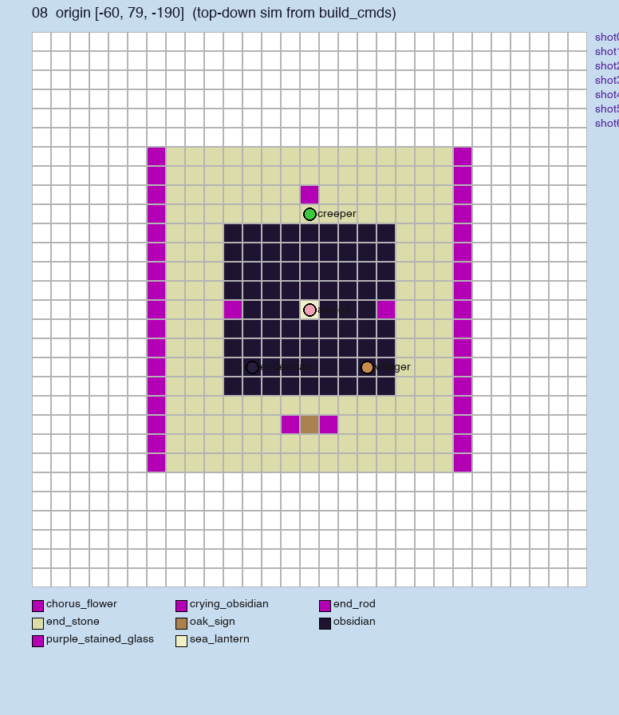
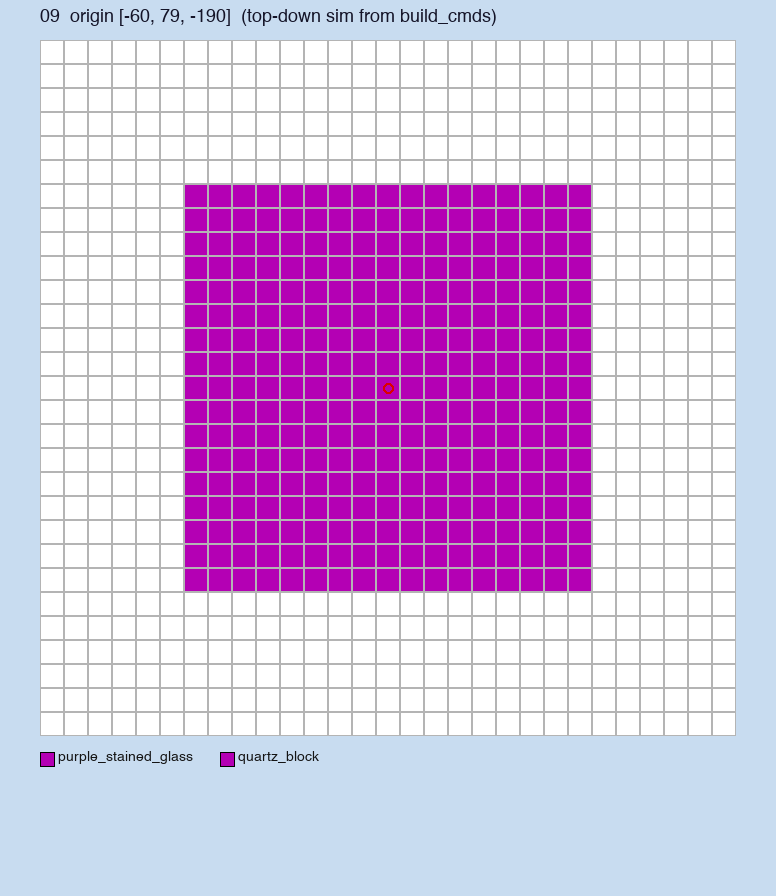
13 themes generated by typing one sentence each into cli_gate1.py.
See GATE1_ACCEPTANCE.md for full pipeline.
A villager pleads in his own voice on the execution block.
Twist: he is the previous server owner.
A creeper stands but refuses to detonate.
Twist: it's guarding a glowing villager egg under its feet.
A player walks through a redstone door at night.
Twist: the mirror inside shows a villager's face — his own.
A player wakes; bed gone, map corrupted.
Twist: the sign reads "you were never born here."
A villager forgets one memory per morning.
Twist: he turns into a creeper before the screen cuts.
美西螈是预言家 引发反转
Twist: 美西螈是预言家 的真相
玩家死后重生发现自己被回滚到前一个版本
Twist: 玩家被回滚到 1.19 版本, 当前服已升 1.20
烈焰人开餐厅烤鸡 引发反转
Twist: 烈焰人开餐厅烤鸡 的真相
船划过末地却到了海里 引发反转
Twist: 船划过末地却到了海里 的真相是出乎意料
玩家挂机一天, 醒来发现村民老了 100 年
Twist: 玩家挂机时间被时间膨胀放大
苦力怕长跑赛 引发反转
Twist: 苦力怕长跑赛 的真相
苦力怕拿钻石求婚, 嘶嘶倒计时不是爆炸而是紧张
Twist: 苦力怕的嘶嘶是紧张, 拿的是钻石而不是 TNT
末影龙不吐火, 吐钻石, 因为它在喂养玩家
Twist: 龙是玩家死去伙伴的灵魂
海豚带玩家去末地 引发反转
Twist: 海豚带玩家去末地 的真相
末影人每晚拿走玩家一件物品, 最后拿走的是玩家的脸
Twist: 末影人就是玩家的影子
唤魔者是退休魔术师 引发反转
Twist: 唤魔者是退休魔术师 的真相
恶魂哭声其实是摇篮曲 引发反转
Twist: 恶魂哭声其实是摇篮曲 的真相
铁傀儡守了 100 天村庄, 终于哭了, 因为没人记得它
Twist: 铁傀儡是上一代村长被困住的灵魂
守卫者守的不是宝藏是花园 引发反转
Twist: 守卫者守的不是宝藏是花园 的真相
玩家走出地图边界回到起点 引发反转
Twist: 玩家走出地图边界回到起点 的真相是出乎意料
玩家挖到地下岩浆湖, 发现一个金币王国, 国王是村民
Twist: 村民其实是上来收税的
下界传送门吐出旧版玩家 引发反转
Twist: 下界传送门吐出旧版玩家 的真相
幻影是死去玩家 引发反转
Twist: 幻影是死去玩家 的真相是出乎意料
幻影晚上送信 引发反转
Twist: 幻影晚上送信 的真相
猪灵开金子银行 引发反转
Twist: 猪灵开金子银行 的真相
玩家被红石电路圈起来当囚犯, 看守是命令方块
Twist: 玩家是被系统判刑的, 看守是命令方块
潜影贝里藏着村民 引发反转
Twist: 潜影贝里藏着村民 的真相是出乎意料
史莱姆选王结果绿大颗赢 引发反转
Twist: 史莱姆选王结果绿大颗赢 的真相
玩家用灵魂换钻石 引发反转
Twist: 玩家用灵魂换钻石 的真相是出乎意料
乌贼用墨汁画画 引发反转
Twist: 乌贼用墨汁画画 的真相
villager 集体罢工换钻石 引发反转
Twist: villager 集体罢工换钻石 的真相
监守者唱摇篮曲 引发反转
Twist: 监守者唱摇篮曲 的真相是出乎意料
女巫给玩家做心理治疗 引发反转
Twist: 女巫给玩家做心理治疗 的真相
玩家杀僵尸涨到 999 级, 然后游戏自动卸载
Twist: 经验涨太高被系统认为是作弊
僵尸放下武器走向 villager 引发反转
Twist: 僵尸放下武器走向 villager 的真相
An enderman steals the sun. Player chases purple particles to the End.
Twist: it was guarding the End from a sleeping intruder.
A teammate keeps saving you, never speaks.
Twist: it's a revive command block you set before dying.
The village puts you on trial for stealing diamonds.
Twist: the chest contains 16 papers with your own name.
Iron golem stands still during a zombie raid.
Twist: behind it hides a baby zombie the village raised in secret.
Player digs deep, hears ticking. Follows redstone wires.
Twist: the entire server is a redstone simulation.
one English (or Chinese) sentence ↓ GPT-5 (director) → 5-shot script JSON ↓ translator → 23 timeline events ↓ mineflayer bot → spawns characters, executes scene ↓ prismarine-viewer → headless render in Paper 1.20.4 ↓ puppeteer + ffmpeg → capture, burn subtitles, mix TTS final.mp4 (15s, 1080×1920, vertical)
Per-render cost: ~$0.02 (just the LLM call). Server is local; no Sora-class $2-per-clip fees. Multi-shot narrative — not one continuous take.
┌─────────────────────────┬──────────────────────────┬──────────┬──────┐ │ Tier │ Tool │ Time │ Cost │ ├─────────────────────────┼──────────────────────────┼──────────┼──────┤ │ Draft (built-in) │ puppeteer + viewer │ 60s │ $0.02│ │ Production (recommended)│ Your MC client + ReplayMod│ 5 min │ Free │ └─────────────────────────┴──────────────────────────┴──────────┴──────┘ Production workflow: 1. python3 cli_full.py "your one-sentence idea" 2. Boot Paper 1.20.4 server (java -jar paper.jar) 3. Open your MC client → join localhost:25565 (install ReplayMod once) 4. node outputs/.../bot.js # builds scene, summons NPCs, fires dialogue 5. ReplayMod: F6 to record, F6 to stop 6. ReplayMod → Render → 1080p 60fps (add Iris shaders for cinematic look) 7. python3 postprod.py recording.mp4 timeline.json final.mp4 # burn subs + TTS
Why split? The headless renderer (prismarine-viewer #477) doesn't support jump-cuts to arbitrary positions. Full-quality MC video has always been a semi-manual ReplayMod workflow — mcstory automates the script + scaffolding parts.
You run Minecraft on Mac, want to ship short-drama IP weekly, and can give honest feedback on which templates land. DM the maintainer.
Apply via email